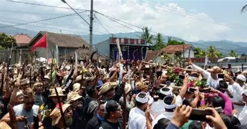
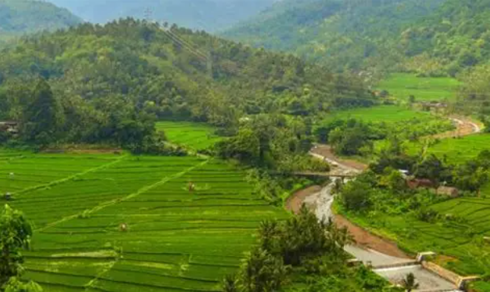
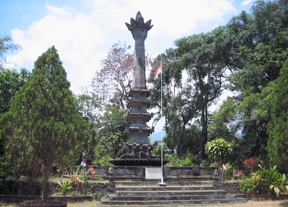
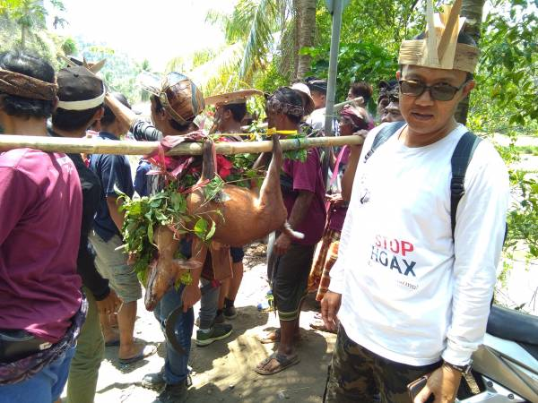
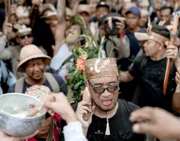
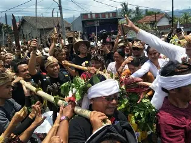

Tersembunyi di rimbunnya hutan tropis Buleleng selatan, Busungbiu menyajikan epik ritual perburuan kuno, jejak perlawanan pahlawan Bali, dan keharuman cengkeh yang mendunia.
Busungbiu adalah kecamatan di area dataran tinggi Buleleng yang menawarkan kesejukan luar biasa. Dengan mayoritas wilayah berupa hutan dan perkebunan, daerah ini memelihara tradisi magis yang melibatkan alam liar serta mengukir sejarah patriotik masa kemerdekaan.
Kecamatan ini merupakan salah satu penghasil cengkeh kualitas terbaik di Bali, yang menjadi tulang punggung perekonomian warganya. Selain itu, Busungbiu adalah tanah saksi bisu Ikrar Pemuda Bali dalam mempertahankan NKRI yang diabadikan di Monumen Bhuwana Kerta.
Harmoni alam liar, hasil bumi melimpah, dan semangat kepahlawanan.

Ritual berburu kijang (I Bulu Pangi) di hutan sakral yang dilakukan kaum pria Desa Busungbiu sejak abad ke-16. Kijang bukan diburu untuk rekreasi, melainkan sebagai sarana yadnya (persembahan suci) dalam upacara Pujawali di Pura Puseh.

Berjalan di desa-desa Busungbiu saat musim panen, udara dipenuhi aroma wangi cengkeh yang dijemur. Cengkeh Busungbiu dikenal berkualitas tinggi karena tumbuh di ketinggian dan iklim yang ideal.

Terletak di perbatasan Busungbiu/Sukasada, monumen ini memperingati ikrar rakyat Bali dalam mengusir penjajah Belanda dan mempertahankan Republik Indonesia. Nilai perjuangannya mengakar di seluruh kawasan Bali Utara.
Sejarahnya merunut pada kedatangan Gusti Patih Cili Ularan dan pembangunan Pura Puseh di tahun 1500-an. Sejak saat itu, kijang menjadi syarat mutlak persembahan piodalan sebagai bentuk syukur kepada alam dan Tuhan.
Meskipun berburu satwa liar, kegiatan ini diikat hukum adat (awig-awig). Perburuan diawali musyawarah (Sangkepan) dan ritual memohon izin (Ngerauhang) kepada penguasa gaib hutan raya.
Alih-alih merusak alam, tradisi ini membatasi perburuan murni hanya untuk kepentingan ritual adat. Ini melatih kedisiplinan warga desa agar tidak melakukan perburuan liar demi keuntungan ekonomi.



Busungbiu berada di ketinggian ideal untuk budidaya cengkeh. Iklim sejuk, curah hujan merata, dan tanah vulkanik yang subur menghasilkan cengkeh dengan kadar minyak atsiri yang tinggi dan aroma yang sangat khas.
Di Desa Panji (perbatasan Busungbiu-Sukasada) berdiri Monumen Bhuwana Kerta — saksi bisu ikrar pemuda Bali tahun 1946 dalam mengusir penjajah Belanda. Monumen ini menjadi simbol patriotisme dan persatuan rakyat Bali Utara.
Saat musim panen tiba, seluruh perbukitan Busungbiu dipenuhi aroma cengkeh. Warga menjemur hasil panennya di setiap halaman rumah, sekaligus menjadikannya komoditas yang menyokong perekonomian seluruh kecamatan.
Saksikan persiapan dan prosesi ritual Meboros Kidang yang sakral, serta keindahan dataran tinggi Busungbiu dengan perkebunan cengkeh yang terhampar luas.
Ritual Meboros Kidang dimulai dengan upacara Ngajit pada tengah malam untuk memohon petunjuk keberadaan kijang. Ribuan krama laki-laki kemudian memasuki hutan sakral dengan peralatan tradisional.
Sumber: Dokumentasi Meboros Kidang
Seberapa baik Anda mengenal sejarah dan budaya di Busungbiu?
Pertanyaan 1
Skor Akhir Anda: 0 / 3